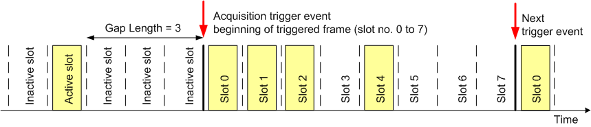
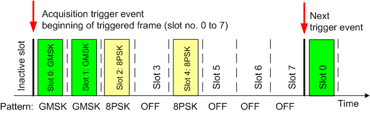

With an active "Acquisition" trigger, the R&S CMW analyzes the RF input signal and derives a frame trigger using information about the active slots. After frame detection, the acquisition trigger events are repeated periodically according to the GSM frame clock. TSC detection is performed continuously to compensate for a possible drift. Two different acquisition trigger modes – "Gap" and "Pattern" – are available.
In the gap trigger mode, the R&S CMW searches for a gap in the sequence of active slots. A gap is a series of 1 to 3 inactive slots. The trigger event is generated at the beginning of the first slot after the gap and is repeated periodically.

To use the gap trigger as shown above, configure the instrument as follows:
Feed the GSM uplink signal to the input connector. Perform the necessary analyzer settings. See "Measuring an UL GSM Signal".
Open the "GSM Measurement – Multi Evaluation Configuration" dialog.
Select "Trigger > Trigger Source: Acquisition", "Trigger > Acquisition > Mode: Gap", "Trigger > Acquisition > Gap Length: 3".
Start the GSM multi-evaluation measurement. Observe the triggered frames in the power vs. time diagram.
In the pattern trigger mode, the R&S CMW analyzes the modulation scheme of the received bursts and searches for a predefined burst pattern. The trigger events are generated at the beginning of the pattern and repeated according to the GSM frame clock, even though the true burst pattern has been changed.

To use the pattern trigger as shown above, configure the instrument as follows:
Feed the GSM uplink signal to the input connector. Perform the necessary analyzer settings. See "Measuring an UL GSM Signal".
Open the "GSM Measurement – Multi Evaluation Configuration" dialog.
Select "Trigger > Trigger Source: Acquisition", "Trigger > Acquisition > Mode: Pattern", "Trigger > Acquisition > Pattern: GMSK GMSK 8PSK OFF 8PSK OFF OFF OFF".
Start the GSM multi-evaluation measurement. Observe the triggered frames in the power vs. time diagram.